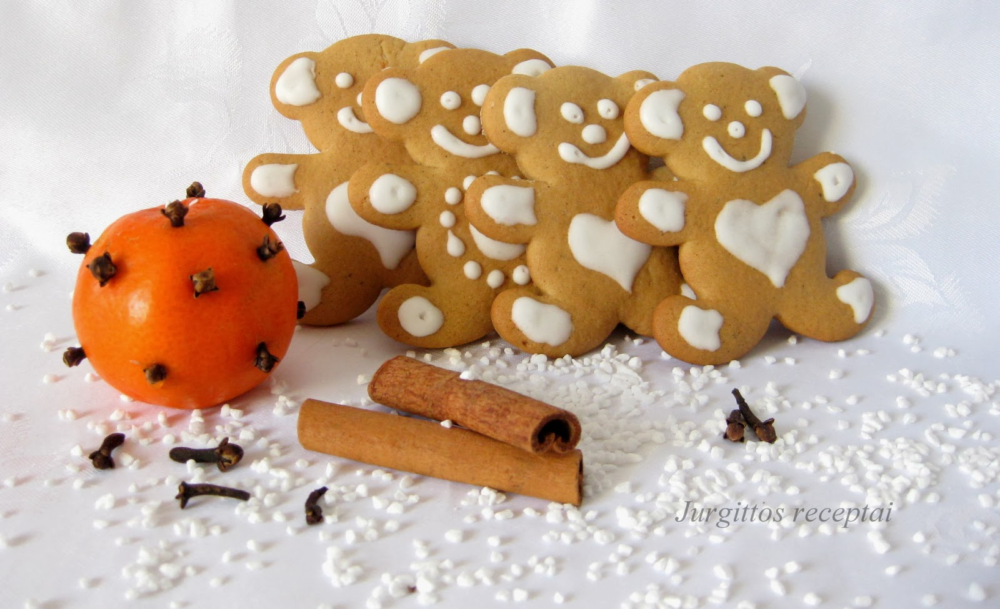

Kalėdinių meduolių receptas
INGREDIENTAI:
500 gramų miltų
2 kiaušiniai
100 gramų sviesto
100 gramų natūralaus medaus
2 šaukteliai vanilinio cukraus
1 šaukštelis sodos
PARUOŠIMAS:

- Į nedidelį prikaistuvį sudėkite medų, sviestą ir rudąjį cukrų. Maišydamos kaitinkite ant vidutinio dydžio ugnies, kol masė užvirs ir visi cukraus kristalai ištirps. Nukelkite prikaistuvį nuo ugnies ir atidėkite į šalį, kol masė atvės ir taps tąsios lyg karamelė konsistencijos
- Dubenyje išsijokite miltus, kepimo miltelius, prieskonius, druską ir sumaišykite. Miltų viduryje suformuokite duobutę. Įmuškite į ją didelį kiaušinį, supilkite atvėsusį medaus, sviesto ir cukraus sirupą. Išmaišykite ir išminkykite tešlą. Jeigu matote, kad tešla per lipni, įberkite dar saujelę miltų. Išminkyta tešla turi būti minkšta, glotni. Suformuokite rutulį, susukite jį į maistinę plėvelę ir palaikykite šaldytuve per naktį.
- Įkaitinkite orkaitę iki 180 °C temperatūros. Kepimo popieriumi išklokite kepimo skardas.
- Išimkite tešlą iš šaldytuvo, padalykite į kelias mažesnes dalis. Miltais pabarstykite lygų ir švarų paviršių – ant jo iškočiokite tešlos gabalėlius. Tešlą kočiokite gana plonai, nes kuo ploniau iškočiosite tešlą, tuo traškesni bus meduoliai.
- Sausainių formelėmis (skirtingo dydžio žvaigždės formos formelėmis) išspauskite meduolius. Jei tokių neturite, iš tvirtesnio popieriaus išsikirpkite trafaretus ir apipjaukite juos aštriu peiliu.
- Paruoštus meduolius perkelkite ant kepimo popieriumi išklotų kepimo skardų. Kepkite įkaitintoje orkaitėje apie 10 min., kol gražiai parus. Stebėkite kepančius meduolius, nes jie kepa labai greitai. Kaitresnėje orkaitėje gali iškepti ir greičiau nei per 10 minučių. Neperkepkite meduolių!
- Iškepusius meduolius atvėsinkite, o tuomet statykite eglutes ir dekoruokite.
SKANAUS!